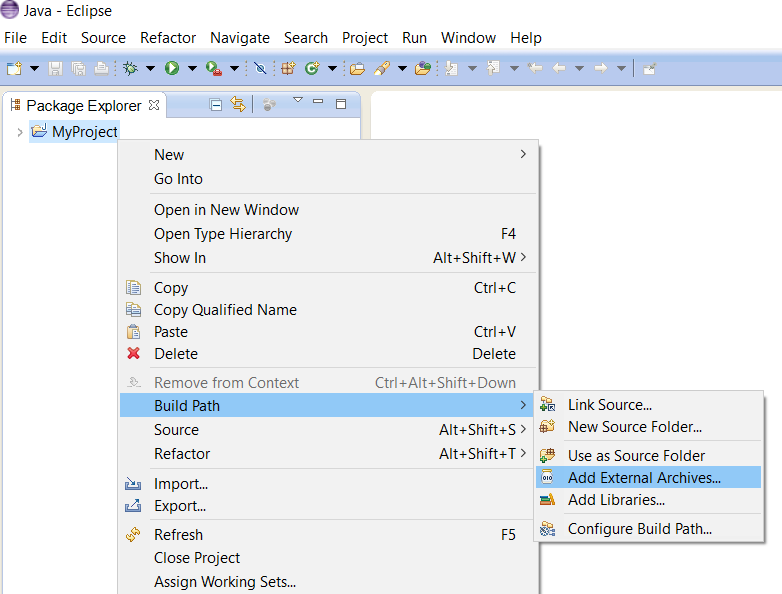
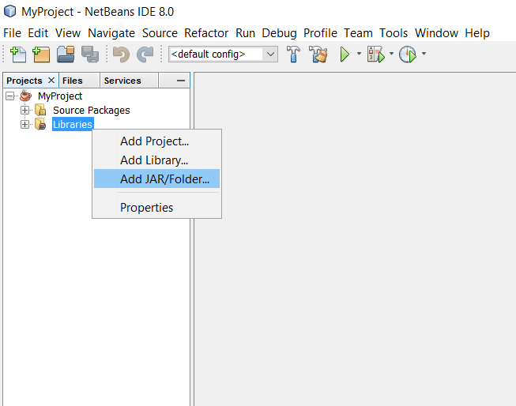

a Java library for business and science
a Java library for business and science
| Nolix 2026-07-01 | Requires Java 25 or higher |
|---|
| Nolix 2026-06-01 | Requires Java 25 or higher |
|---|---|
| Nolix 2026-05-01 | Requires Java 25 or higher |
| Nolix 2026-04-01 | Requires Java 25 or higher |
| Nolix 2026-03-01 | Requires Java 25 or higher |
| Nolix 2026-02-01 | Requires Java 25 or higher |

